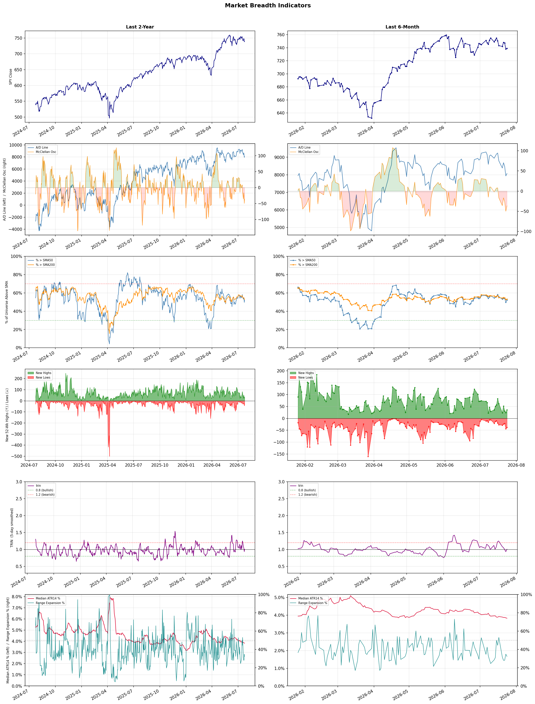

A daily market breadth and sector rotation report for active investors
| Item | Read |
|---|---|
| Regime | Selective Risk-On |
| Risk posture | Cautious |
| Universe | 1,337 stocks tracked · 36 new 52-week highs · 30 active swing setups |
| Breadth | 52.1% of tracked stocks are above SMA50 — neutral range, new lows exceed new highs (38 vs 36), McClellan oscillator (breadth momentum) is negative at -36.4 |
| Leadership | Oil & Gas Refining & Marketing, REIT - Office, and REIT - Healthcare Facilities |
| Weakest groups | Uranium, Other Industrial Metals & Mining, and Utilities - Renewable |
Use this report to prioritize research and chart review; validate entries, stops, liquidity, earnings, and risk before acting.
| Item | Read |
|---|---|
| Primary read | Selective Risk-On regime with Cautious risk posture. |
| Research queue | PBF, DINO, MPC, PSX, UGP |
| Leadership focus | Oil & Gas Refining & Marketing, REIT - Office, and REIT - Healthcare Facilities |
| Caution list | Uranium, Other Industrial Metals & Mining, and Utilities - Renewable |
| Review prompt | Check extension risk, chart location, fundamentals, valuation, and earnings before using any research row. |
| Item | Read |
|---|---|
| Primary read | 3 active risk warnings; use screen output as watchlist input only. |
| Bullish screens | OHI, JPM, MUFG, ALL, TRV |
| Bearish screens | ORCL, UBER, PRCT, BHC, TLRY |
| Alerts / levels | Automated trigger, stop, ATR, liquidity, reward/risk, and event-risk levels are pending future enrichment. |
| Review prompt | Open the linked chart, define trigger and invalidation, then check liquidity and event risk independently. |
Risk Posture: Cautious — screen backdrop is selective; prioritize research in top-ranked groups
Metric context: McClellan below -50 = elevated selling pressure; below -100 = washout territory. Range Expansion = share of stocks with daily range above their 20-day average. Signal Density = share of tracked names appearing in signal screens.
| Breadth Date | % > SMA50 | % > SMA200 | New Highs | New Lows | McClellan | Median Range | Avg Range | Median ATR14 | Range Expansion | Signal Density |
|---|---|---|---|---|---|---|---|---|---|---|
| 2026-07-24 | 52.1% | 53.1% | 36 | 38 | -36.4 | 3.1% | 3.9% | 3.8% | 32.3% | 13.7% |

Prior comparison date: July 23, 2026
| Metric | Prior | Current | Change |
|---|---|---|---|
| Regime | Defensive | Selective Risk-On | changed |
| Risk Posture | Defensive | Cautious | changed |
| % > SMA50 | 49.8% | 52.1% | +2.3 pts |
| % > SMA200 | 52.7% | 53.1% | +0.4 pts |
| New Highs | 24 | 36 | +12 |
| New Lows | 44 | 38 | +6 |
Top-10 industries entering: Insurance - Property & Casualty, Insurance Brokers, Medical Care Facilities, and REIT - Retail. Top-10 industries leaving: Diagnostics & Research, Health Information Services, Healthcare Plans, and REIT - Hotel & Motel. New multi-signal long setups: ALL, DYN, MUFG, OGE, OVV, PBA, QURE. New multi-signal short setups: BBAI, BHC, ORCL.
| Status | Tickers | Read |
|---|---|---|
| Added | ALL, ARX, BBAI, BHC, DYN, EPRT, HNGE, MUFG | New technical screen matches vs prior report. |
| Removed | AGNT, APA, BHVN, BRSL, BXMT, CSGP, CTVA, ET | No longer present in today's technical screen matches. |
| Still Active | ALHC, EVGO, EXTR, FE, GH, JPM, MRK, OHI | Appeared in both current and prior reports. |
| Promoted | none | Model Screen Score improved by at least 15 points. |
| Downgraded | GH | Model Screen Score declined by at least 15 points. |
| Direction | Industry | ETF | Prior Rank | Current Rank | Days | Rank Change |
|---|---|---|---|---|---|---|
| Rose | Oil & Gas Refining & Marketing | CRAK | 84 | 1 | 35 | +83 |
| Rose | Insurance Brokers | N/A | 85 | 5 | 35 | +80 |
| Rose | REIT - Healthcare Facilities | XLRE | 77 | 3 | 42 | +74 |
| Rose | Oil & Gas Integrated | XLE | 82 | 8 | 14 | +74 |
| Rose | Financial Data & Stock Exchanges | N/A | 95 | 31 | 42 | +64 |
Bull: The Oil & Gas Refining & Marketing sector, as represented by the ETF CRAK, is experiencing a bullish trend due to a combination of strong demand dynamics and improving geopolitical conditions, as indicated by headlines discussing hopes for Middle East de-escalation. Additionally, the sector is benefiting from a resurgence in profitability after years of underperformance, highlighted by CRAK hitting a new 52-week high and being recognized as a top-performing ETF area. This resurgence is further supported by analysts pointing to specific refining and marketing companies, such as Marathon Petroleum, that are outperforming their peers, suggesting robust operational efficiencies and market positioning.
Bear: While the Oil & Gas Refining & Marketing sector may appear to be on an upswing, several headwinds could undermine its current momentum. Rising crude oil prices, driven by geopolitical tensions and OPEC+ production cuts, could significantly squeeze refining margins, eroding profitability. Additionally, the long-term transition to renewable energy and increasing regulatory pressures on fossil fuels may pose existential risks to the sector, suggesting that the recent gains may be short-lived rather than indicative of a sustainable recovery.
Verdict: The Oil & Gas Refining & Marketing sector's bullish trend is primarily driven by strong demand dynamics and improved geopolitical conditions, which have boosted profitability and operational efficiencies among leading companies like Marathon Petroleum. However, key risks remain, particularly from rising crude oil prices and the ongoing transition to renewable energy, which could pressure refining margins and threaten the sector's long-term viability. Investors should closely monitor crude price fluctuations and regulatory developments to assess the sustainability of this momentum.
Sources: Yahoo Finance, Google News
Bull: The Insurance Brokers industry is likely experiencing rising relative strength due to strong demand for brokerage services and ongoing mergers and acquisitions (M&A), as highlighted in the Yahoo Finance article about stocks poised to benefit from these trends. Despite recent fears surrounding AI disruptions, the solid earnings reported by companies like Ryan Specialty indicate resilience and robust performance, suggesting that the fundamental outlook for insurance brokers remains strong amid market volatility. This combination of favorable demand dynamics and strategic consolidation positions the sector for continued growth, countering the negative sentiment reflected in recent headlines.
Bear: While the bull thesis highlights strong demand and M&A activity, it underestimates the significant threat posed by AI technologies that could disrupt traditional brokerage models, as indicated by recent headlines. The decline from five-year highs and compressing multiples suggest that investor sentiment is shifting, reflecting concerns about the sustainability of earnings in a rapidly evolving landscape. Additionally, the strong performance of individual companies like Ryan Specialty may not be indicative of the broader industry's health, especially if larger structural challenges emerge that could undermine profitability across the sector.
Verdict: The Insurance Brokers industry is experiencing rising relative strength primarily due to robust demand for brokerage services and strategic M&A activity, which are driving growth despite market volatility. However, the key risk lies in the potential disruption from AI technologies that could fundamentally alter traditional brokerage models, leading to concerns about long-term profitability and sustainability across the sector. Investors should closely monitor advancements in AI and their impact on industry dynamics while considering opportunities in companies that demonstrate resilience and adaptability.
Sources: Google News
Bull: The rising relative strength of the Healthcare Facilities REIT sector can be attributed to the increasing demand for healthcare services, which is driving occupancy rates and rental income for these properties. As highlighted in the recent headlines, the broader market is experiencing volatility, particularly within financial stocks, which may lead investors to seek the stability and income potential offered by healthcare REITs. Additionally, articles discussing the best healthcare REITs for the future indicate a growing recognition of their resilience and potential for growth, further enhancing investor confidence in this sector.
Bear: While the rising relative strength of Healthcare Facilities REITs may seem promising, it's essential to consider the broader economic context, including potential interest rate hikes and inflationary pressures that could impact borrowing costs and operational expenses for these companies. Additionally, the increasing demand for healthcare services does not necessarily translate into higher occupancy rates or rental income, especially as reimbursement rates from government programs remain under pressure and competition intensifies in the healthcare sector. This volatility in the financial markets may lead to a flight to safety, but it could also signal underlying economic concerns that could dampen the performance of healthcare REITs in the long run.
Verdict: The rising strength of the Healthcare Facilities REIT sector is primarily driven by increasing demand for healthcare services, which supports occupancy rates and rental income, particularly as investors seek stability amid broader market volatility. However, key risks include potential interest rate hikes and inflationary pressures that could elevate borrowing costs and operational expenses, alongside the possibility that heightened demand may not fully translate into improved financial performance due to reimbursement rate challenges and intensified competition. Investors should closely monitor economic indicators and government policy changes that could impact the sector's profitability.
Sources: Yahoo Finance, Google News
Bull: The Oil & Gas Integrated sector is likely experiencing a rise in relative strength due to the anticipation of increasing oil prices, as highlighted by articles discussing the potential benefits for oil stocks from rising oil prices. Additionally, the overall positive sentiment in the equity markets, indicated by the advancements in exchange-traded funds and equity futures, suggests a broader bullish outlook that is favoring energy stocks amidst mixed sector performance. This combination of macroeconomic optimism and sector-specific catalysts positions the Oil & Gas Integrated industry favorably for growth.
Bear: While the bull analyst points to rising oil prices as a catalyst for growth in the Oil & Gas Integrated sector, it's important to consider the potential headwinds that could undermine this optimism. The mixed performance of energy stocks, as indicated by recent sector updates, suggests underlying volatility and uncertainty, which could be exacerbated by geopolitical tensions, regulatory changes, and increasing focus on renewable energy alternatives. Moreover, the broader equity market's positive sentiment may not be sustainable, particularly if new tariffs or economic headwinds negatively impact consumer demand and overall market confidence.
Verdict: The Oil & Gas Integrated sector is likely rising due to anticipated increases in oil prices, driven by macroeconomic optimism and positive sentiment in equity markets, which are favoring energy stocks. However, investors should remain cautious of potential headwinds, including geopolitical tensions and regulatory changes, which could introduce volatility and undermine the sector's growth prospects. It is advisable to monitor these risks closely while considering positions in this industry.
Sources: Yahoo Finance, Google News
Bull: The Financial Data & Stock Exchanges sector is likely experiencing rising relative strength due to increasing market volatility and uncertainty, as indicated by headlines discussing weekly losses in major indices and the struggles of sectors like semiconductors. This environment typically drives demand for financial data services and analytics, as investors seek better insights to navigate turbulent markets. Additionally, the mention of undervalued stocks suggests that investors are looking for opportunities, which can further bolster the need for financial data and analytics to identify potential winners.
Bear: While the bull analyst points to rising demand for financial data services amid market volatility, this environment can also lead to heightened caution among investors, potentially reducing trading volumes and overall market activity. Furthermore, the focus on undervalued stocks may indicate a lack of confidence in the broader market, as investors are forced to search for value in a declining environment rather than engaging with growth opportunities, which could ultimately diminish the revenue potential for financial data and analytics firms.
Verdict: The Financial Data & Stock Exchanges sector is likely rising due to heightened demand for analytical services as investors seek to navigate increasing market volatility and identify undervalued stocks. However, the key risk lies in the potential for reduced trading volumes and investor caution, which could limit revenue growth for financial data firms if market confidence continues to wane. Investors should closely monitor trading activity and sentiment indicators to gauge the sustainability of this upward trend.
Sources: Google News
| Direction | Industry | ETF | Prior Rank | Current Rank | Days | Rank Change |
|---|---|---|---|---|---|---|
| Fell | Electrical Equipment & Parts | XLI | 9 | 81 | 35 | -72 |
| Fell | Electronic Components | XLK | 1 | 68 | 35 | -67 |
| Fell | Solar | TAN | 21 | 85 | 42 | -64 |
| Fell | Semiconductor Equipment & Materials | SOXX | 3 | 67 | 35 | -64 |
| Fell | Auto Parts | N/A | 13 | 73 | 35 | -60 |
Bear: While the bull analyst attributes the sector's decline to broader market volatility and upcoming earnings uncertainty, the persistent relative weakness in the Electrical Equipment & Parts sector suggests deeper structural issues. The introduction of new U.S. tariffs could significantly increase costs for manufacturers, squeezing margins and limiting growth potential, particularly as global supply chains remain fragile. Furthermore, the positive signals from the S&P Global Manufacturing PMI may not translate into sustained demand for electrical equipment, especially if economic conditions deteriorate or if consumer and business confidence wanes in the face of rising inflation and interest rates.
Bull: The Electrical Equipment & Parts sector is experiencing a decline in relative strength primarily due to broader market volatility, particularly influenced by major tech stock sell-offs and uncertainty surrounding upcoming earnings reports, as highlighted in the recent headlines. Additionally, the introduction of new U.S. tariffs could create headwinds for manufacturing, despite the positive signal from the S&P Global Manufacturing PMI indicating recovery in the sector. This combination of factors has likely overshadowed the potential growth opportunities within the electrical equipment space, leading to its relative underperformance.
Verdict: The Electrical Equipment & Parts sector's decline can be fundamentally attributed to heightened market volatility and the looming impact of new U.S. tariffs, which may exacerbate existing cost pressures and hinder growth potential. The key risk from the bear case is the fragility of global supply chains and the potential for weakening demand, driven by rising inflation and interest rates, which could further suppress the sector's recovery. Investors should closely monitor economic indicators and tariff developments to gauge the sector's trajectory.
Sources: Yahoo Finance, Google News
Bear: While the bull analyst attributes the sector's decline to broader market pressures, it is crucial to recognize that the Electronic Components sector is facing its own unique challenges, including rising raw material costs and supply chain disruptions that are not solely a function of market volatility. Furthermore, the introduction of new U.S. tariffs could significantly impact the profitability of companies within this sector, as they may struggle to pass on increased costs to consumers, leading to compressed margins and potentially reduced investment in innovation and growth. Thus, the bearish outlook is supported by fundamental weaknesses that extend beyond general market trends.
Bull: The recent decline in the relative strength of the Electronic Components sector can be attributed to broader market pressures, as indicated by headlines highlighting a general downturn in tech stocks and equity futures. Additionally, the mention of new U.S. tariffs suggests potential headwinds for the industry, which could impact profit margins and supply chain dynamics, further exacerbating the sector's struggles in the face of a volatile economic environment.
Verdict: The Electronic Components sector's decline is primarily driven by unique challenges such as rising raw material costs and ongoing supply chain disruptions, which are compounded by new U.S. tariffs that threaten profit margins. This bearish outlook highlights the key risk that companies may struggle to pass on these increased costs to consumers, potentially leading to reduced investment in innovation and growth. Investors should closely monitor these fundamental weaknesses, as they could signal a prolonged downturn in the sector.
Sources: Yahoo Finance, Google News
Bear: While the bull analyst attributes the recent decline in solar stocks to market volatility and investor caution, a more pressing concern is the potential for overcapacity and declining margins in the solar industry. Despite strong earnings, the rapid growth in solar installations may lead to increased competition and price wars, undermining profitability. Additionally, the mention of TAN's rally masking a tax burden suggests that the structural challenges facing the industry, including regulatory changes and potential subsidy rollbacks, could significantly dampen future growth prospects, leading to a reassessment of valuations and investor sentiment.
Bull: The recent decline in relative strength for the solar industry, despite strong earnings and bullish outlooks, can be attributed to market volatility and investor sentiment shifting towards caution amid broader economic concerns. Headlines indicate that while solar stocks like First Solar and Enphase have received positive upgrades and demonstrated significant gains, the overarching narrative includes fears of overvaluation, as suggested by the mention of TAN's rally masking a potential tax burden, and skepticism regarding the sustainability of growth given the recent decision to sell TAN. Moreover, the contrasting performance of clean energy ETFs and the mention of policy cycles indicate that while the long-term outlook remains positive, short-term fluctuations and profit-taking may be impacting investor confidence.
Verdict: The recent decline in the solar industry can be primarily attributed to investor caution amid fears of overcapacity and declining margins, despite strong earnings reports. The key risk highlighted by the bear case is the potential for increased competition and price wars, which could undermine profitability and lead to a reassessment of valuations, prompting investors to adopt a more cautious stance. To navigate this environment, stakeholders should closely monitor market dynamics and regulatory changes that could impact growth prospects.
Sources: Yahoo Finance, Google News
Bear: While the bull analyst points to mixed signals within the semiconductor sector, the broader trend of declining relative strength suggests a more systemic issue rather than isolated company performance. The imposition of new U.S. tariffs could exacerbate supply chain challenges and increase operational costs, particularly for companies heavily reliant on international markets like Samsung and SK Hynix. Furthermore, the bearish sentiment from key industry players, such as the Chinese CEO's stark warning regarding NVIDIA, raises significant concerns about future demand and competitive pressures, indicating that the sector may be facing deeper, more persistent headwinds than the bull thesis acknowledges.
Bull: The Semiconductor Equipment & Materials sector is experiencing a decline in relative strength primarily due to concerns over broader market conditions and specific company performance within the industry. Recent headlines highlight a mixed outlook, with Texas Instruments' near-perfect earnings being interpreted as a warning signal for the chip sector, while the pessimistic views from a Chinese CEO on NVIDIA further dampen sentiment. Additionally, the imposition of new U.S. tariffs could create uncertainty for companies reliant on global supply chains, leading to a cautious approach from investors in this space.
Verdict: The semiconductor equipment and materials sector is likely experiencing a decline due to a combination of broader economic uncertainties and specific concerns about demand and competitive pressures, particularly highlighted by mixed earnings reports and bearish sentiments from industry leaders. The key risk from the bear case is the potential for heightened operational challenges and increased costs stemming from new U.S. tariffs, which could further strain companies reliant on global supply chains. Investors should closely monitor these developments and consider reducing exposure to this sector until clearer signs of stability emerge.
Sources: Yahoo Finance, Google News
Bear: While the bull analyst highlights resilience in companies like Advance Auto Parts, the broader industry trend of declining relative strength suggests that this is more a reflection of speculative trading rather than fundamental improvement. Rising interest rates and inflation are likely to continue pressuring consumer spending on non-essential automotive repairs, and the increasing volatility from acquisition rumors may further destabilize the market, leading to a more pessimistic outlook for sustained growth in the auto parts sector. Thus, the potential for recovery may be overstated in the face of these persistent macroeconomic challenges.
Bull: The Auto Parts industry is experiencing a decline in relative strength likely due to macroeconomic pressures, such as rising interest rates and inflation, which can dampen consumer spending on automotive repairs and parts. Additionally, the headlines indicate increased speculation and acquisition activity, such as O'Reilly's rumored bid for Genuine Parts, which can create uncertainty and volatility in the sector. Despite these challenges, companies like Advance Auto Parts are showing resilience, as evidenced by their recent stock performance, suggesting potential for recovery and growth as the market stabilizes.
Verdict: The Auto Parts industry is experiencing a decline primarily due to macroeconomic pressures, such as rising interest rates and inflation, which are reducing consumer spending on automotive repairs and parts. While some companies like Advance Auto Parts may show resilience, the key risk lies in the potential for ongoing economic challenges to suppress demand, making any recovery prospects overly optimistic in the current environment. Investors should remain cautious and closely monitor economic indicators and consumer sentiment before making significant commitments in this sector.
Sources: Google News
| Industry | Rank | ETF | 7d | 14d | 28d | 42d | Chg 42d | Size | 20D | 60D | Composite | Active Setups |
|---|---|---|---|---|---|---|---|---|---|---|---|---|
| Oil & Gas Refining & Marketing | 1 | CRAK | 1 | 10 | 57 | 74 | +73 | 7 | 24.8% | 22.1% | 0.965 | 0 |
| REIT - Office | 2 | XLRE | 3 | 23 | 5 | 9 | +7 | 8 | 6.1% | 27.2% | 0.882 | 0 |
| REIT - Healthcare Facilities | 3 | XLRE | 7 | 26 | 29 | 77 | +74 | 10 | 9.4% | 14.2% | 0.881 | 0 |
| Insurance - Life | 4 | N/A | 10 | 15 | 36 | 34 | +30 | 7 | 9.8% | 11.9% | 0.870 | 0 |
| Insurance Brokers | 5 | N/A | 13 | 14 | 40 | 81 | +76 | 6 | 11.7% | 9.9% | 0.859 | 0 |
| Banks - Diversified | 6 | N/A | 15 | 9 | 12 | 12 | +6 | 16 | 4.3% | 16.6% | 0.851 | 0 |
| Medical Care Facilities | 7 | IHF | 4 | 3 | 7 | 36 | +29 | 9 | 7.0% | 17.4% | 0.847 | 0 |
| Oil & Gas Integrated | 8 | XLE | 32 | 82 | 81 | 65 | +57 | 10 | 16.2% | 3.7% | 0.845 | 0 |
| Insurance - Property & Casualty | 9 | KIE | 6 | 6 | 11 | 60 | +51 | 8 | 6.9% | 13.3% | 0.831 | 0 |
| REIT - Retail | 10 | N/A | 9 | 46 | 17 | 27 | +17 | 11 | 3.5% | 8.6% | 0.825 | 1 |
Rank columns (7d–42d) show the industry's rank that many trading days ago — lower is stronger. Chg 42d = rank change vs 42 trading days ago — positive means the industry moved up. 20D and 60D are the mean stock return within the industry over that period. Active Setups: count of today's swing-trade candidates from this industry appearing across all signal screens.
| Industry | Rank | ETF | 7d | 14d | 28d | 42d | Chg 42d | Size | 20D | 60D | Composite | Active Setups |
|---|---|---|---|---|---|---|---|---|---|---|---|---|
| Uranium | 88 | URA | 88 | 77 | 86 | 98 | +10 | 6 | -10.6% | -29.9% | 0.060 | 0 |
| Other Industrial Metals & Mining | 87 | N/A | 87 | 88 | 78 | 71 | -16 | 21 | -16.9% | -27.7% | 0.094 | 0 |
| Utilities - Renewable | 86 | N/A | 82 | 83 | 59 | N/A | N/A | 7 | -19.2% | -14.1% | 0.094 | 0 |
| Solar | 85 | TAN | 66 | 53 | 67 | 21 | -64 | 8 | -18.5% | -6.4% | 0.124 | 0 |
| Aerospace & Defense | 84 | ITA | 85 | 86 | 80 | 64 | -20 | 26 | -8.8% | -16.7% | 0.167 | 0 |
| Grocery Stores | 83 | N/A | 74 | 66 | 66 | N/A | N/A | 5 | -9.4% | -9.0% | 0.170 | 0 |
| Specialty Industrial Machinery | 82 | N/A | 80 | 68 | 70 | 82 | 0 | 21 | -10.4% | -15.9% | 0.182 | 1 |
| Electrical Equipment & Parts | 81 | XLI | 79 | 55 | 42 | 29 | -52 | 12 | -24.0% | -7.2% | 0.183 | 0 |
| REIT - Mortgage | 80 | N/A | 59 | 64 | 64 | 91 | +11 | 12 | -2.8% | -9.3% | 0.197 | 0 |
| Gold | 79 | GDX | 86 | 81 | 87 | 97 | +18 | 27 | -1.7% | -18.1% | 0.213 | 0 |
Rank columns (7d–42d) show the industry's rank that many trading days ago — lower is stronger. Chg 42d = rank change vs 42 trading days ago — positive means the industry moved up. 20D and 60D are the mean stock return within the industry over that period. Active Setups: count of today's swing-trade candidates from this industry appearing across all signal screens.
These are research candidates from top-ranked stocks, capped at five names per industry to avoid over-concentration. Returns shown (60D, 120D, 250D) are historical — they reflect where prices have already moved, not forward expectations. Extension Risk flags names that may require extra patience or a better entry point. They are not buy signals.
Chart: TV = TradingView chart (opens in browser); PDF = local chart file (if downloaded).
| Ticker | Name | Industry | Industry Rank | Market Cap | 60D Hist | 120D Hist | 250D Hist | Extension Risk | Research Reason | Chart |
|---|---|---|---|---|---|---|---|---|---|---|
| PBF | PBF Energy | Oil & Gas Refining & Marketing | 1 | N/A | 49.0% | 84.2% | 155.1% | Constructive | Top-ranked in industry | TV |
| DINO | HF Sinclair | Oil & Gas Refining & Marketing | 1 | N/A | 40.8% | 69.8% | 104.5% | Constructive | Top-ranked in industry | TV |
| MPC | Marathon Petroleum | Oil & Gas Refining & Marketing | 1 | N/A | 33.0% | 75.5% | 80.2% | Constructive | Top-ranked in industry | TV |
| PSX | Phillips 66 | Oil & Gas Refining & Marketing | 1 | N/A | 25.2% | 44.0% | 65.5% | Constructive | Top-ranked in industry | TV |
| UGP | Ultrapar Participacoes | Oil & Gas Refining & Marketing | 1 | N/A | 9.4% | 34.5% | 114.3% | Constructive | Top-ranked in industry | TV |
| HPP | Hudson Pacific Properties | REIT - Office | 2 | N/A | 57.1% | 78.4% | -12.8% | Extended | Top-ranked in industry; extended | TV |
| HIW | Highwoods Properties Inc | REIT - Office | 2 | N/A | 35.0% | 30.2% | 11.2% | Constructive | Top-ranked in industry | TV |
| CUZ | Cousins Properties Inc | REIT - Office | 2 | N/A | 25.5% | 27.4% | 15.7% | Constructive | Top-ranked in industry | TV |
| BXP | BXP Inc | REIT - Office | 2 | N/A | 16.8% | 6.9% | -3.7% | Constructive | Top-ranked in industry | TV |
| DEI | Douglas Emmett Inc | REIT - Office | 2 | N/A | 10.4% | 16.3% | -21.0% | Constructive | Top-ranked in industry | TV |
| WELL | Welltower | REIT - Healthcare Facilities | 3 | N/A | 17.7% | 33.8% | 56.0% | Constructive | Top-ranked in industry | TV |
| VTR | Ventas Inc | REIT - Healthcare Facilities | 3 | N/A | 14.8% | 29.4% | 51.3% | Constructive | Top-ranked in industry | TV |
| AHR | American Healthcare REIT | REIT - Healthcare Facilities | 3 | N/A | 14.1% | 22.4% | 53.8% | Constructive | Top-ranked in industry | TV |
| SBRA | Sabra Health Care REIT Inc | REIT - Healthcare Facilities | 3 | N/A | 9.0% | 19.4% | 22.7% | Constructive | Top-ranked in industry | TV |
| MPT | Medical Properties Trust | REIT - Healthcare Facilities | 3 | N/A | -6.4% | -3.6% | 12.0% | Lagging | Top-ranked in industry; lagging | TV |
| PRU | Prudential Financial | Insurance - Life | 4 | N/A | 23.8% | 8.0% | 14.0% | Constructive | Top-ranked in industry | TV |
| MET | MetLife | Insurance - Life | 4 | N/A | 21.1% | 20.2% | 20.7% | Constructive | Top-ranked in industry | TV |
| MFC | Manulife Financial | Insurance - Life | 4 | N/A | 13.2% | 14.6% | 39.4% | Constructive | Top-ranked in industry | TV |
| LNC | Lincoln National | Insurance - Life | 4 | N/A | 10.6% | -0.6% | 18.7% | Constructive | Top-ranked in industry | TV |
| PUK | Prudential | Insurance - Life | 4 | N/A | -3.7% | -11.1% | 16.3% | Lagging | Top-ranked in industry; lagging | TV |
These are technical screen matches from existing signal files. They are not trade recommendations. Trigger, stop, ATR, liquidity, reward/risk, and event risk still require separate validation until those inputs are available.
Model Screen Score is weighted by signal count, industry rank, freshness, and setup type. It is not a probability of profit, expected return, or suitability rating. Industry cap: max 3 candidates per industry.
Signal glossary: Momentum Pullback = stock in an uptrend that has pulled back 10–30% and shows re-entry conditions. MA Compression = short- and long-term moving averages converging, often preceding a directional move. Three-Day Up/Down = three consecutive closes in the same direction. New 52Wk High/Low = price reached a new annual extreme.
Chart: TV = TradingView chart (opens in browser); PDF = local chart file (if downloaded).
| Ticker | Industry | Setups | Close | Industry Rank | Signal Count | Model Screen Score | Reason | Chart |
|---|---|---|---|---|---|---|---|---|
| OHI | REIT - Healthcare Facilities | New 52Wk High; Three-Day Up | 51.72 | 3 | 2 | 100 | Multi-signal; top industry breakout | TV |
| JPM | Banks - Diversified | New 52Wk High; Three-Day Up | 353.21 | 6 | 2 | 93 | Multi-signal; top industry breakout | TV |
| MUFG | Banks - Diversified | New 52Wk High; Three-Day Up | 22.89 | 6 | 2 | 93 | Multi-signal; top industry breakout | TV |
| ALL | Insurance - Property & Casualty | New 52Wk High; Three-Day Up | 259.97 | 9 | 2 | 85 | Multi-signal; top industry breakout | TV |
| TRV | Insurance - Property & Casualty | New 52Wk High; Three-Day Up | 387.26 | 9 | 2 | 85 | Multi-signal; top industry breakout | TV |
| PBA | Oil & Gas Midstream | New 52Wk High; Three-Day Up | 51.37 | 12 | 2 | 85 | Multi-signal; new-high strength | TV |
| MRK | Drug Manufacturers - General | New 52Wk High; Three-Day Up | 131.07 | 17 | 2 | 77 | Multi-signal; new-high strength | TV |
| DYN | Biotechnology | New 52Wk High; Three-Day Up | 24.44 | 23 | 2 | 77 | Multi-signal; new-high strength | TV |
| OVV | Oil & Gas E&P | New 52Wk High; Three-Day Up | 63.13 | 29 | 2 | 70 | Multi-signal; new-high strength | TV |
| OGE | Utilities - Regulated Electric | New 52Wk High; Three-Day Up | 49.95 | 40 | 2 | 70 | Multi-signal; new-high strength | TV |
| FE | Utilities - Regulated Electric | MA Compression; Three-Day Up | 49.92 | 40 | 2 | 65 | Multi-signal; compression setup | TV |
| ALHC | Healthcare Plans | Momentum Pullback | 19.43 | 16 | 2 | 62 | Multi-signal; pullback setup | TV |
| QURE | Biotechnology | Momentum Pullback | 38.97 | 23 | 2 | 62 | Multi-signal; pullback setup | TV |
| REPL | Biotechnology | Momentum Pullback | 9.70 | 23 | 2 | 62 | Multi-signal; pullback setup | TV |
| EXTR | Communication Equipment | Momentum Pullback | 29.49 | 69 | 2 | 40 | Multi-signal; pullback setup | TV |
| HNGE | Health Information Services | Momentum Pullback | 74.31 | 11 | 1 | 50 | Single-signal; pullback setup | TV |
| GH | Diagnostics & Research | Momentum Pullback | 147.33 | 14 | 1 | 50 | Single-signal; pullback setup | TV |
| PSNL | Diagnostics & Research | Momentum Pullback | 11.78 | 14 | 1 | 50 | Single-signal; pullback setup | TV |
| TWST | Diagnostics & Research | Momentum Pullback | 90.27 | 14 | 1 | 50 | Single-signal; pullback setup | TV |
| ARX | Insurance Brokers | Three-Day Up | 14.23 | 5 | 1 | 48 | Single-signal; top industry setup | TV |
| THC | Medical Care Facilities | Three-Day Up | 233.20 | 7 | 1 | 48 | Single-signal; top industry setup | TV |
| EPRT | REIT - Retail | MA Compression | 32.34 | 10 | 1 | 45 | Single-signal; top industry setup | TV |
Bearish setups — stocks making new lows or showing persistent downside patterns. Validate carefully before acting.
| Ticker | Industry | Setups | Close | Industry Rank | Signal Count | Model Screen Score | Reason | Chart |
|---|---|---|---|---|---|---|---|---|
| ORCL | Software - Infrastructure | New 52Wk Low; Three-Day Down | 114.99 | 20 | 2 | 47 | Multi-signal; new-low weakness | TV |
| UBER | Software - Application | New 52Wk Low; Three-Day Down | 65.94 | 26 | 2 | 40 | Multi-signal; new-low weakness | TV |
| PRCT | Medical Devices | New 52Wk Low; Three-Day Down | 16.69 | 32 | 2 | 40 | Multi-signal; new-low weakness | TV |
| BHC | Drug Manufacturers - Specialty & Generic | New 52Wk Low; Three-Day Down | 4.43 | 41 | 2 | 35 | Multi-signal; new-low weakness | TV |
| TLRY | Drug Manufacturers - Specialty & Generic | New 52Wk Low; Three-Day Down | 3.88 | 41 | 2 | 35 | Multi-signal; new-low weakness | TV |
| EVGO | Specialty Retail | New 52Wk Low; Three-Day Down | 1.42 | 55 | 2 | 35 | Multi-signal; new-low weakness | TV |
| BBAI | Information Technology Services | New 52Wk Low; Three-Day Down | 2.76 | 61 | 2 | 25 | Multi-signal; new-low weakness | TV |
| VNET | Information Technology Services | New 52Wk Low; Three-Day Down | 7.21 | 61 | 2 | 25 | Multi-signal; new-low weakness | TV |
How To Use This Report
| Use | Purpose |
|---|---|
| Market map | Start with breadth, regime, risk warnings, and what changed since the prior report. |
| Industry scan | Use leading, deteriorating, rising, and declining industries to focus research. |
| Research queue | Treat long-term candidates as names for deeper fundamental, valuation, and chart review. |
| Technical review | Treat bullish and bearish screen matches as watchlist inputs that require independent trigger, stop, liquidity, and event-risk checks. |
| Source follow-up | Use chart links and source files to verify raw inputs before relying on any row. |
What This Report Is Not
| Not | Meaning |
|---|---|
| Investment advice | The report does not evaluate personal objectives, risk tolerance, tax situation, account type, or suitability. |
| Buy/sell recommendation | Named tickers are research candidates or screen matches, not recommendations to transact. |
| Price target | The report does not provide fair value estimates, targets, or expected returns. |
| Trade plan | Trigger, stop, sizing, reward/risk, liquidity, and event-risk review remain separate user work. |
| Performance claim | Model Screen Score is not validated historical performance or a forecast of future results. |
| Item | Note |
|---|---|
| Version | Daily Report Methodology v1 |
| Model Screen Score | Screen-fit rank based on signal count, industry rank, freshness, and setup type. |
| Not predictive proof | The score is not expected return, probability of profit, historical validation, or suitability analysis. |
| Industry ranks | Composite industry ranks use existing daily ranking outputs and historical rank columns when available. |
| Research candidates | Long-term rows are research candidates from ranked stocks and leading industries, with historical returns labeled as historical only. |
| Technical matches | Bullish and bearish rows are screen matches requiring independent chart, trigger, stop, liquidity, and event-risk review. |
| Source | Status | Rows | Path |
|---|---|---|---|
| Market breadth | present | 1255 | breadth_20260724.csv |
| Industry composite rankings | present | 88 | all_industry_composite_20260724.csv |
| Top ranked stocks | present | 92 | top_ranked_composite_20260724.csv |
| All ranked stocks | present | 1337 | all_stocks_composite_sorted_20260724.csv |
| Top momentum pullbacks | present | 1486 | top_momentum_pullbacks_20260724.csv |
| MA compression | present | 1486 | ma_compression_stocks_20260724.csv |
| Three-day up/down | present | 242 | three_day_up_down_stocks_20260724.csv |
| New 52-week members | present | 74 | breadth_new_52wk_members_20260724.csv |
This report is generated from automated technical screens and is for informational and research purposes only. It is not investment advice, a solicitation, or a recommendation to buy or sell any security. Past performance is not indicative of future results. You are solely responsible for your own investment decisions. Consult a licensed financial advisor before acting on any information herein.